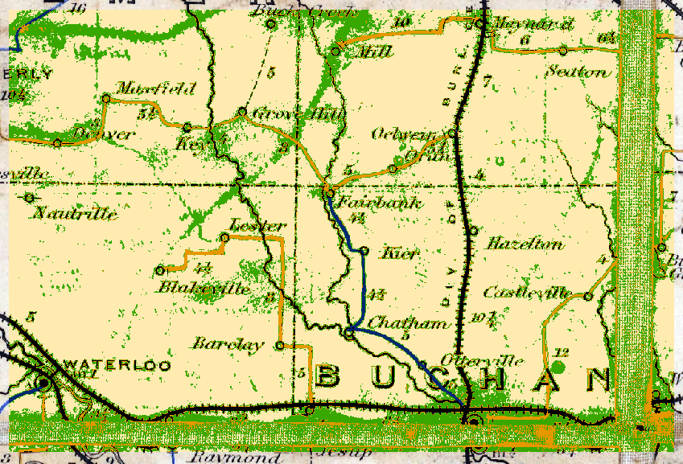
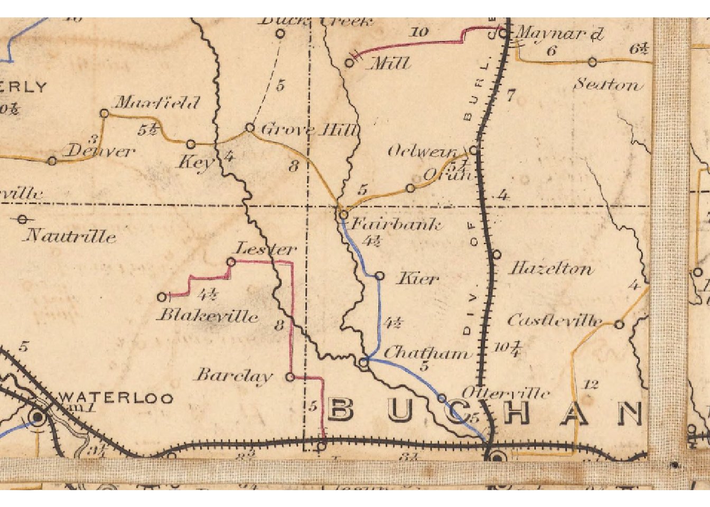
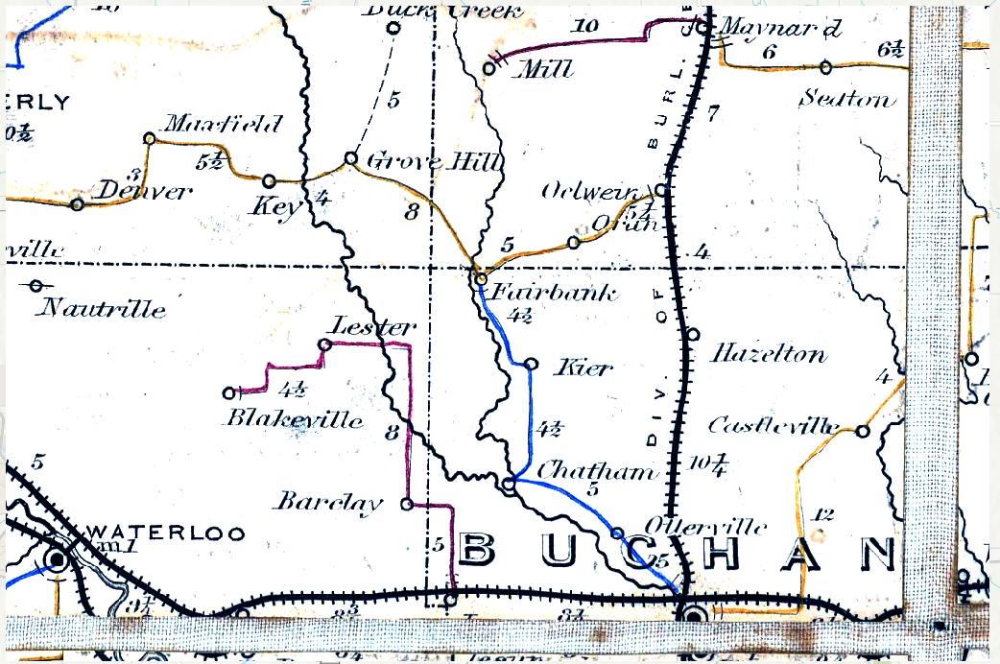
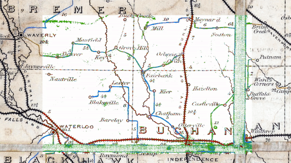
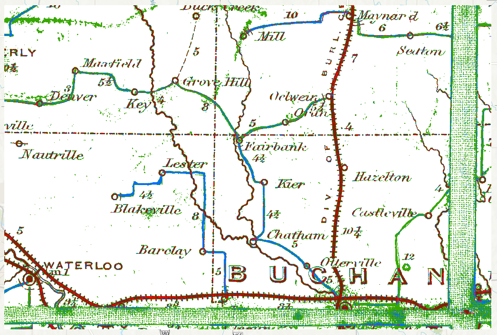
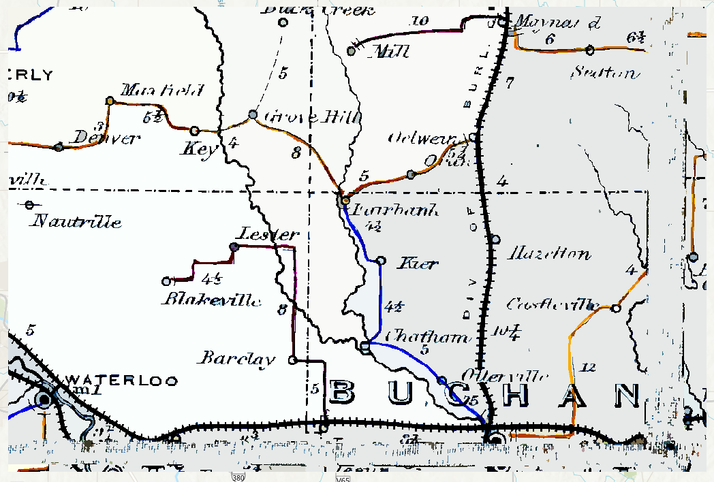
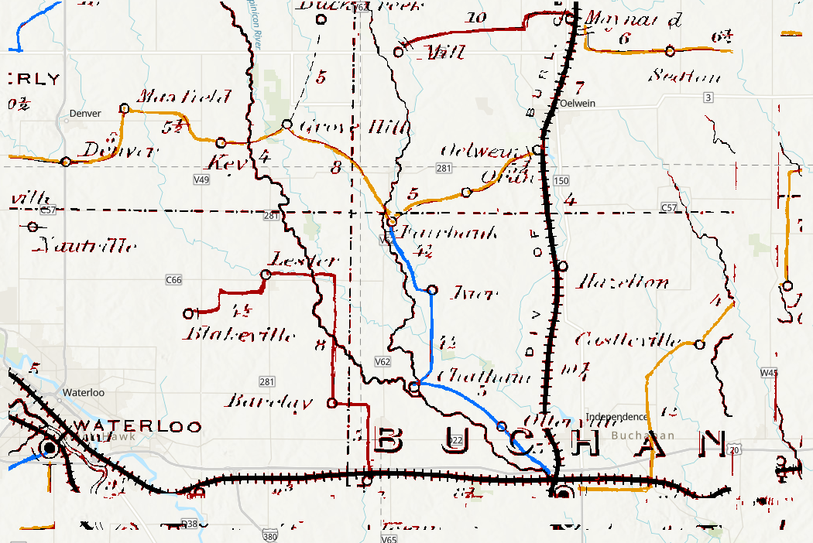
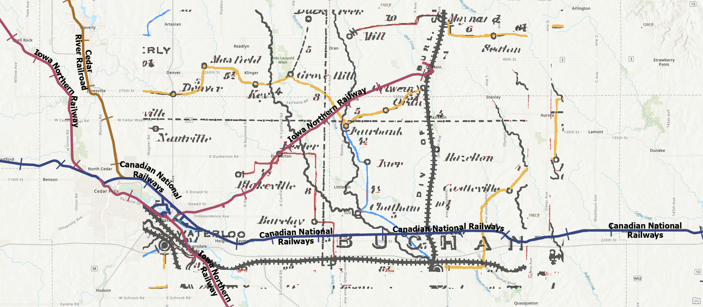

library(aRcGeo)
library(arcgisbinding)
library(reticulate)
library(sf)
library(raster)
library(tidyverse)Introduction
In the previous blog, we ran a classification function without using any pre-processing on the image. The results were fairly impressive but had some imperfections for our use case that is going to be discussed in this blog.
Processing Extent

To retrieve the output above we set our classification to 5 classes but were only returned 3 because the classifier didn’t find enough proximity between the differing features. To fix this, a potential solution is to run the classifier on the complete raster and to set the processing output to the desired clipped area like the one we have here with Buchanan, Iowa. Doing this ensures that classifications are established based on features from the complete map raster and assigned across any selected area. Otherwise the classifier may fail to classify objects which are less common in other parts of the raster.
We can see a discernible difference if we run the classification on the whole raster and set the processing extent on Buchanan, Iowa rather on only running on the clipped area.
Let’s fist load our libraries
We will first establish paths to our raster files like last time. This time, I am also adding a path to the full postal route map.
setwd("../GIS_DATA/Maps/")
# Paths to rasters
Raster_Paths <- file.path(getwd())
trim_path <- file.path(Raster_Paths, "Trims")
# The full map
Upper_Postal_Route_ALL_tif <- file.path(Raster_Paths, "Upper_Part_Post_Route_Map_of_States_of_Illinois_Iowa_and_Missouri.tif")
# The clipped maps
Des_Moines_Postal_Route_tif <- file.path(trim_path, "Des_Moines_Postal_Route.tif")
Buchanan_Postal_Route_tif <- file.path(trim_path, "Postal_Routes_Selection.tif")We then need to initialize a connection and set our workspace to the geodatabase.
aRcGeo::init_arcpy(conda_env = "arcgispro-py3-DeepLearning")
arcpy$CheckExtension("Spatial")
arcpy$env$workspace = file.path(getwd(), "HistoricalMapMachineLearning.gdb")We will also set our processing extent to the postal route clip including Buchanan, Iowa. Here I am using a raster object inside of the database with the same extents.
arcpy$env$extent <- "Stretch_Postal_IsoClusterUns"Most arcpy functions will only take absolute paths so we have to be careful about the path we set for our in_raster_bands argument.
Upper_Postal_Route_ALL_tif <- stringr::str_replace_all(Upper_Postal_Route_ALL_tif, "/", "\\\\")
Buchanan_Classified_Five <- arcpy$sa$IsoClusterUnsupervisedClassification(in_raster_bands = Upper_Postal_Route_ALL_tif, Number_of_classes = 5)
Buchanan_Classified_Five$save("Buchanan_Classified_Five")We can see in the results that we now have more classes in our clipped raster and can be more confident that other areas on the map will also be classified more uniformly.

Classification Clutters
In the latter classified example (one with set extent), we saw that the classifier distinguished the linear features quite well, but features like the postal routes were not all classified as unique features. We have a classified blue and yellow postal route but no unique class for the red one. This isn’t an ideal classification output if we intend to run any spatial tests on the three separate postal routes.
brick(Buchanan_Postal_Route_tif) %>%
plotRGB()
Another concern are the classified background patches of the map which we can see in a lighter color in the former example and in dark green in the latter one. While we might be able to ignore them by removing their classifications in a GIS program, increasing the number of desired classifications will only continue to mix parts of the background with features we would like to identify independently which is an obvious larger concern.
Our test with the five classifications above partially verifies this. As we returned a higher class count, we didn’t necessarily get the features we wanted but rather features on the map that were closer as a class mathematically. The classifier found that background spots were closer together in pixel value than red colored routes. That’s why we only have two postal routes uniquley identified but even more of the background appearing as additional classes.
At this point, we can turn to working on processing the original image so that we are able to get a better classification for our purposes.
Image Stretch
One way to remove those features is to use a stretch function. Help on the Arcgis Stretch function defines the functions as “[improving] the appearance of the data by spreading the pixel values along a histogram from the minimum and maximum values defined by their bit depth.” Without going into too much detail about the whole process, we can display the results of a high-filter min-max stretch to see how it affects our clipped extent.
arcpy$ia$Stretch(Buchanan_Postal_Route_tif, "PercentClip", min_percent = , max_percent = 85)The resulting image is sharper and filters out a lot of the blotched pieces of the map background successfully.

With this stretched image, the classifier does a better job of focusing on the features we are more interested in while removing those background pieces. We can see quite a difference when we overlay the previous classification with the new stretched one.

Here is the stretched classification in closer detail. Our goal of removing the background patterns has worked relatively well with a lesser portion of the darker blemishes making their appearance as a class. Another success is that we are getting an additional classification for the different postal routes though the classification is still not entirely accurate. The red and blue routes from our original map are mixed in a single classification. Perhaps requesting a higher classification output could help with that but unfortunately, the classifier only finds 5 different classes with the stretched map.
Our solution may be to take a step back and process the image further.

Image Segmentation
We need to return more classes and we are also interested in further getting rid of the patches that still appear in the background. Stretching the image further potentially risks losing features on the map that are not as boldly drawn. The county lines or creek features which thin out are good examples of the information we may accidentally remove with more stretching.
Using our stretched image, we have the option to use an image segmentation model to segment features on the map based on the adjustment of average pixel values in an area to their closest values. The output of a high spatial and low spectral segmentation model looks like this.

Some advantages of the segmentation is that we are able to get rid of a significant portion of the background pieces of the map. This even includes the stitching that we could see in the original and previous classified images. Our features are segmented well but it is at the cost of reducing the legibility of the textual features on the map. The trade-off is one that has to be considered if those particular features are desired features to be digitized from the map.
If we are happy with the result we can run a classification on this model and see how that performs.

In the classification output above, I’ve removed a lot of the background classifications so we can see the underlying tile map. There are major improvements. All unique postal features are classified properly and we have almost none of the blemishes from the background of the map bleeding into the features.
We are still working with color values and its normal for the classifier to confuse colors that are on the edges of our features, since they have different values to the inner pixels. It may be a little difficult to see but some of the the Segmented Classification map features are surrounded by the red classification. This isn’t a major complication but it will be something we need to work on in order to get better features extracted for when we want to conduct our spatial analysis. This is something I will be touching on in the following blog.
For now, let’s look at the fruits of our labor by adding a layer containing all current rail line features provided by the Iowa Department of Transportation (DOT) (updated last on November 22, 2022) and see how it compares to the lines of our historical map.

We can see just from this example we’ve been working on that the lower rail line currently operated by the Canadian National Railways is probably the same rail track documented in our historical map. The Iowa Northern Railway moving northeast and southwest however is not represented in our historical map. Interestingly, we see that there is a northern line on the historical map which doesn’t correspond to any current rail line that the Iowa DOT data provides. With the information that our map documents rail lines pre-1879, we can answer some interesting questions about the development of railways in Iowa.
There are reasons as to why the rail lines don’t exactly overlap with one another but I will also dedicate a blog in explaining how we can overcome differences like this so that we can conduct our historical and spatial analysis.
TO BE CONTINUED